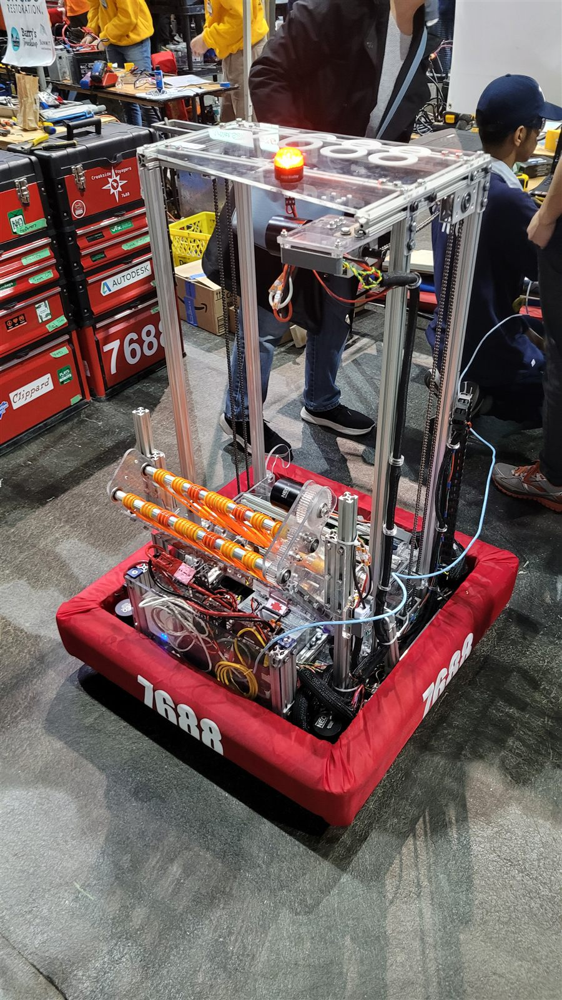
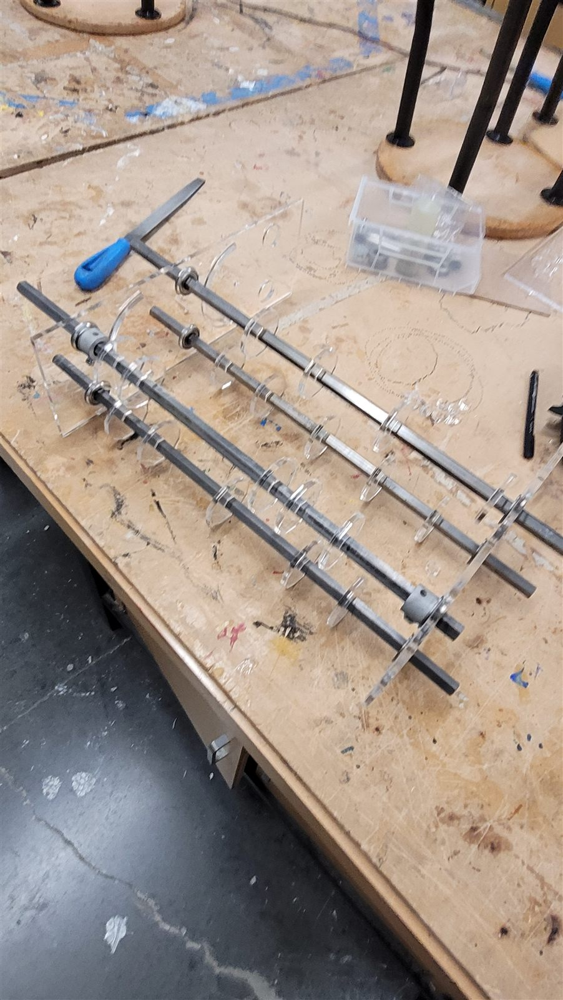
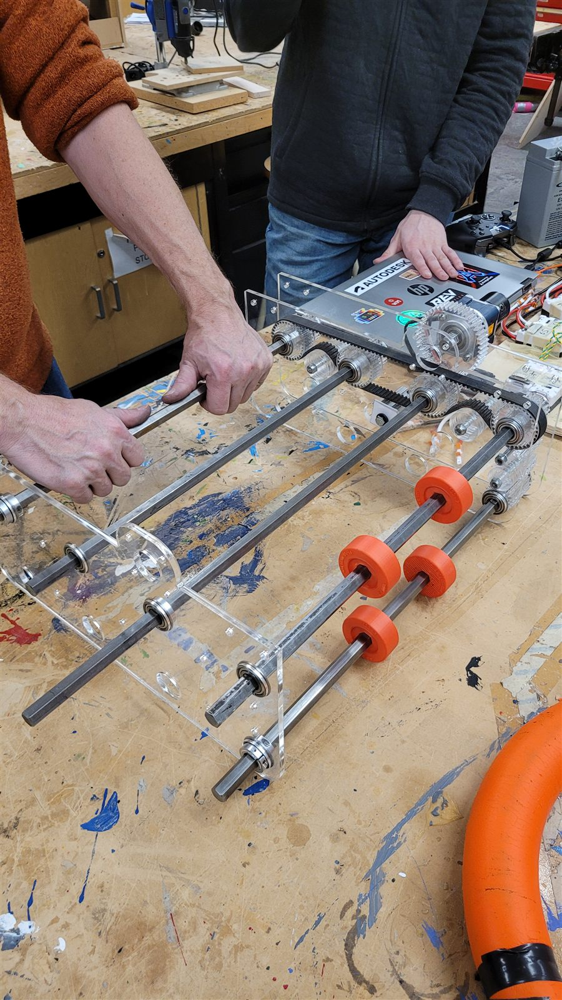
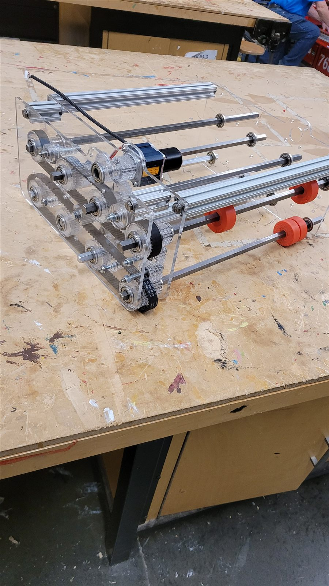
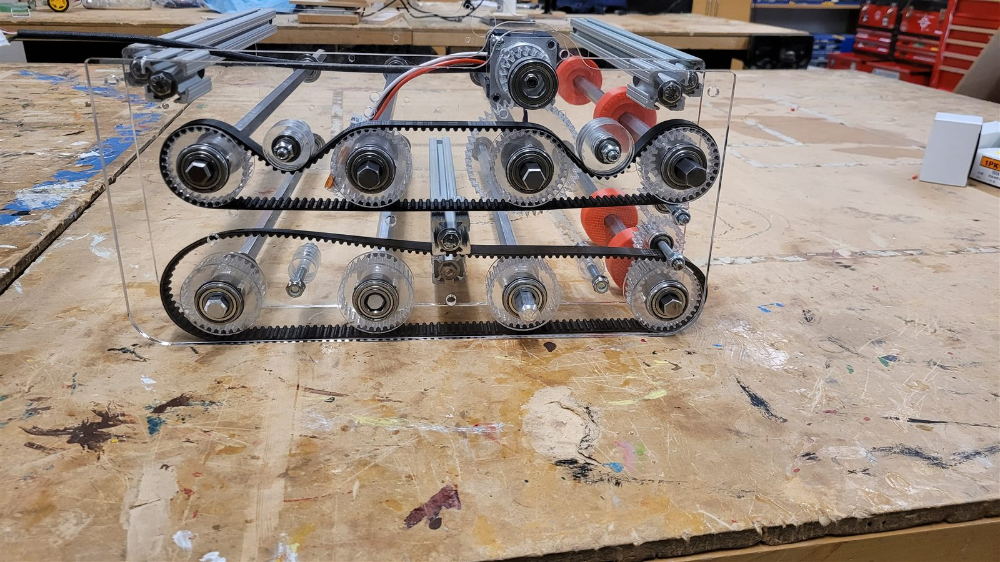
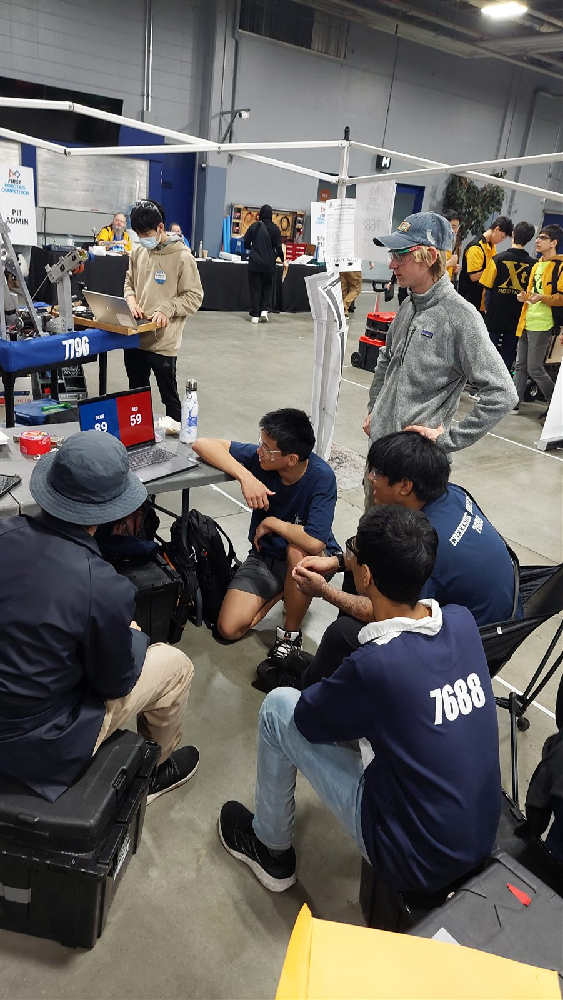
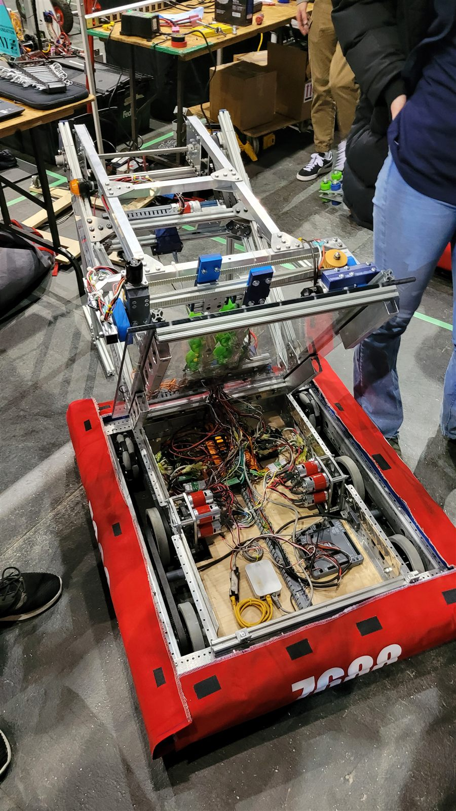

FIRST Robotics







Overview
Over 4 years in my highschool, I participated in the FIRST Robotics competition, where I worked on designing and building a robot to compete in different annual challenges. When I was in 11th grade, I was the lead designer for our team, responsible for creating the CAD models in Fusion360 and overseeing the construction of the robot. I was also responsible for teaching new members CAD skills and ensuring that our designs were efficient and met the competition requirements.
Design & Challenges
In FIRST Robotics, you get 2 months to build your robot for a new game every year. The challenge I was most involved in was to design an intake for 14'' foam rings, which are then passed to the shooter. The intake was able to pick it up in 0.5 seconds. In my grade 12 year, I designed a 2 stage elevator system that lifts up the intake for the new game.
Results
Every year, our team participated in Canadian Pacific regional competition and worked hard to improve our robot's performance. We had lots of fun building the robot and learning new skills. Although we did not advance to the world's championship, many core memories were made.